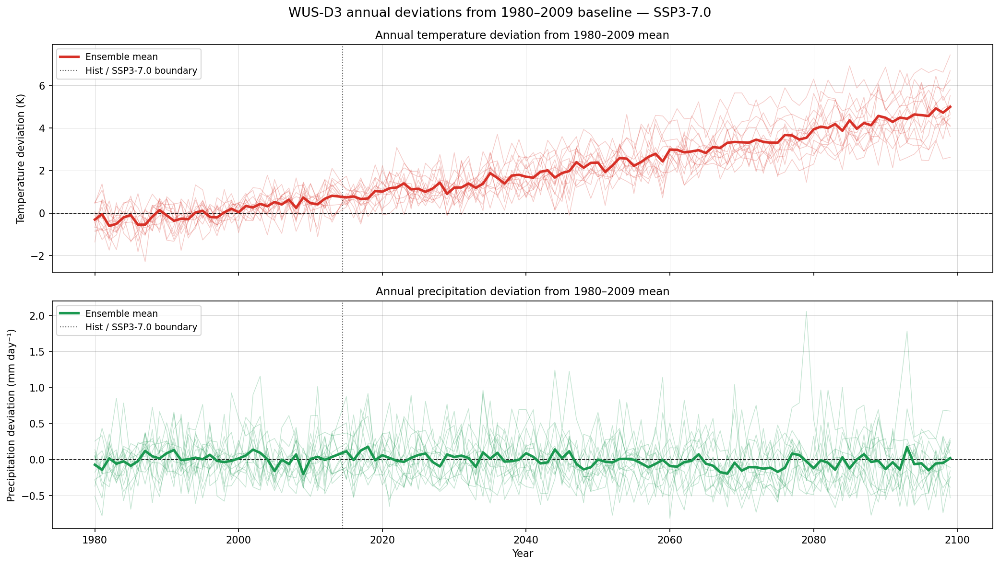

Explore results
Ensemble figures

Monthly precipitation Δ — ensemble mean choropleth

Precipitation Δ — spaghetti plot across GCMs

Monthly temperature Δ — ensemble mean choropleth

Temperature Δ — spaghetti plot across GCMs
Annual deviations — ensemble

Annual deviation timeseries — ensemble